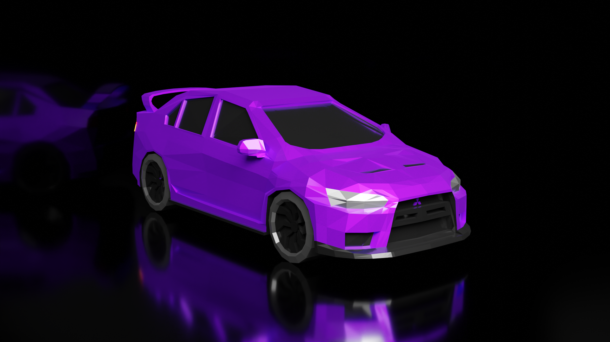
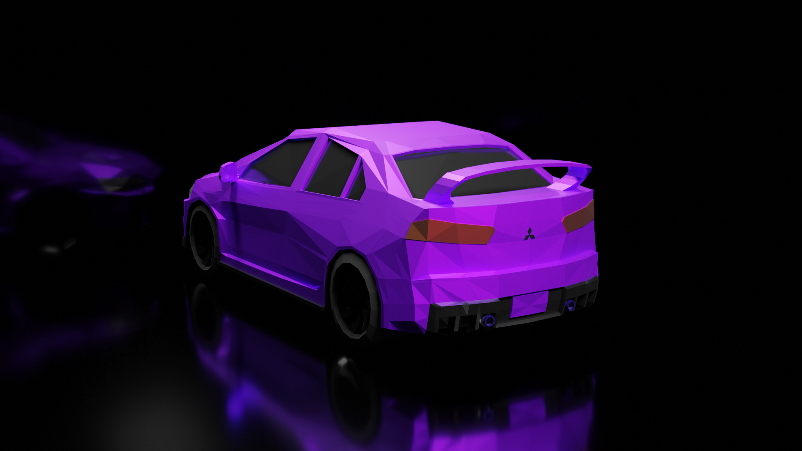
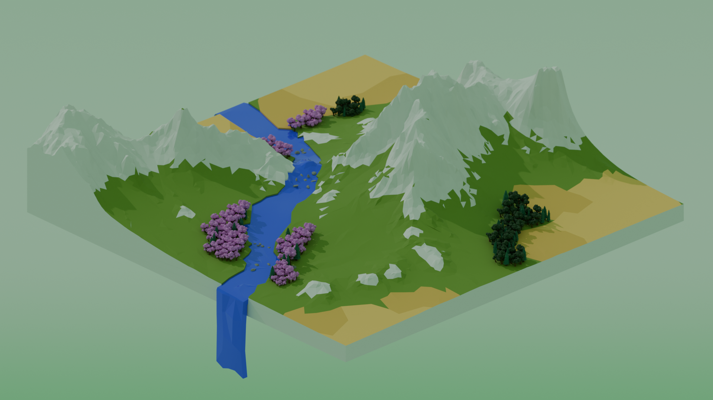
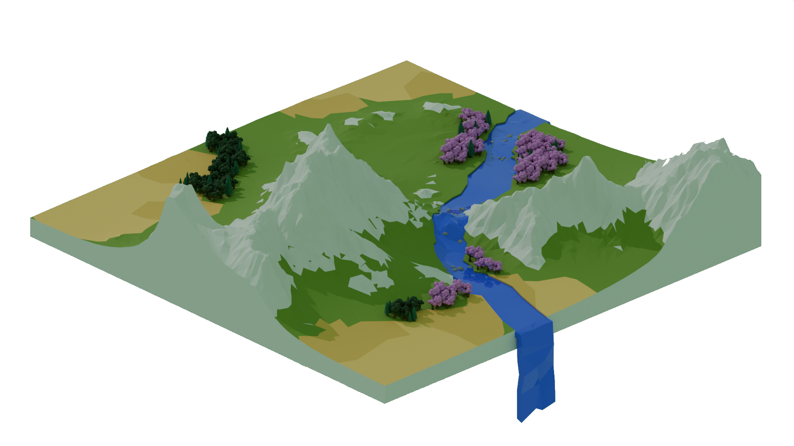
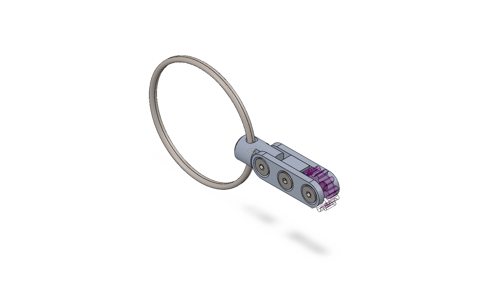
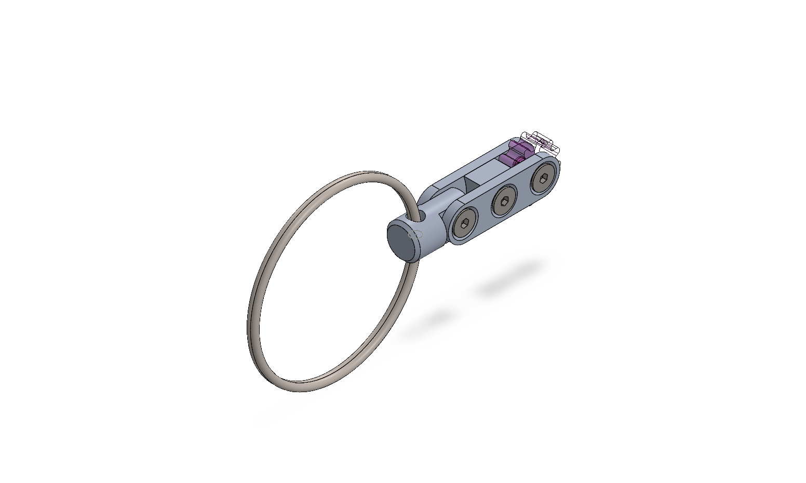
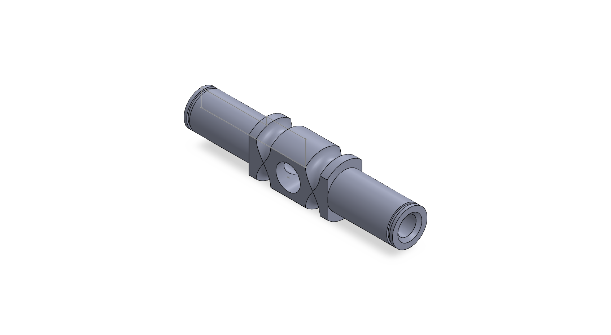
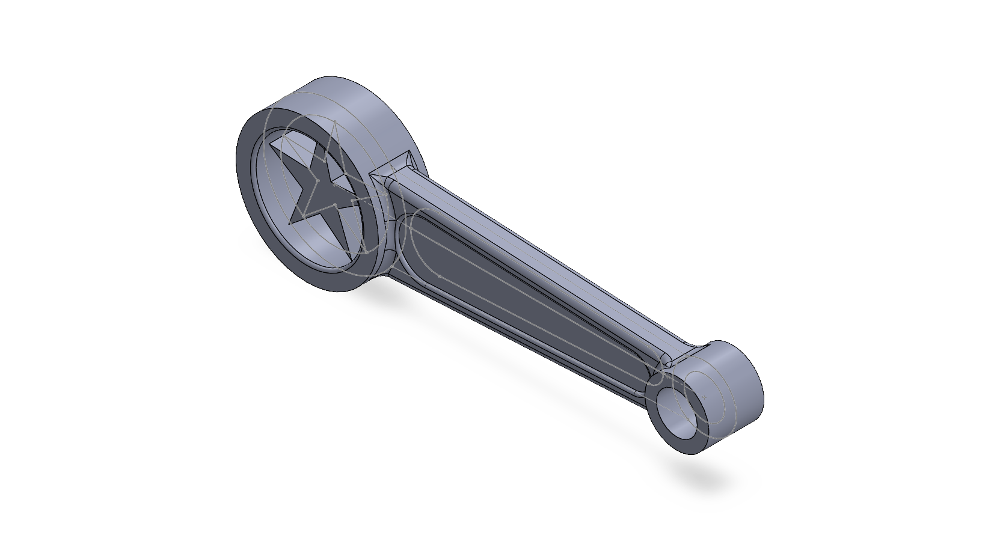
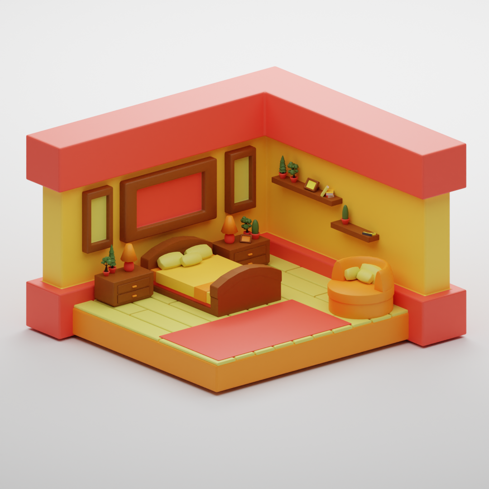
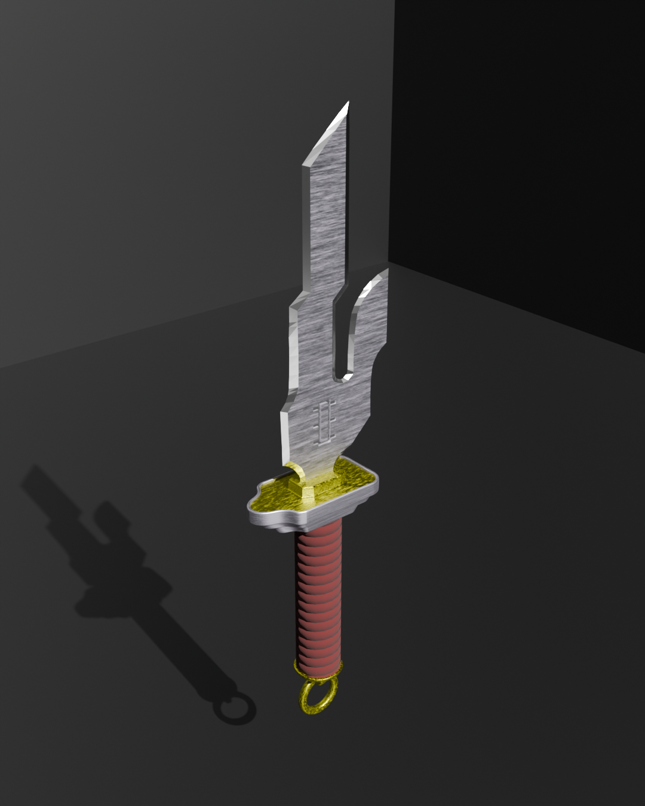

January 23, 2024
For my Grade 12 final project, I designed and modeled a low-poly Mitsubishi Lancer EVO X using Blender. The project focuses on relatively clean topology and optimized geometry. Despite the simplified form, the model retains the stylistic features of the EVO X, including the aggressive bumpers, hood, spoiler, and overall shape. This model showcases my skills in Blender and my ability to accurately follow reference photos and blueprints.


March 20, 2025
During my Winter 2025 co-op term, I took the opportunity to explore Blender and experiment with different modifiers. As a personal project, I created a stylized low poly landscape featuring vibrant colors, a flowing river, and geometric low poly trees. This project helped me better understand Blender’s modeling tools and aesthetic design.


At the start of my ME 100 course, we had the opportunity to machine our own keychains. One of our SolidWorks projects involved creating a model of that same keychain using tools such as extrude, fillet, threading, and mating.


Created a parametric SolidWorks models of a Brake Balance Centre Trunnion and a Engine Connecting Rod using features like extrusion, cut, mirror, and fillet, with fully adjustable dimensions set through equations.


This is one of several isometric bedrooms I created in Blender. At this stage in my learning, I discovered how rewarding it is to design and customize my own 3D models. This scene features a clean aesthetic with warm colors and cozy decorative elements, reflecting my growing interest in interior visualization.

Another model I created during my work term, this spear represents a turning point in my 3D work. While I’ve designed swords and daggers before, this was my first time experimenting with textures and proper topology. It’s inspired by the Inverted Spear of Heaven from Jujutsu Kaisen.
